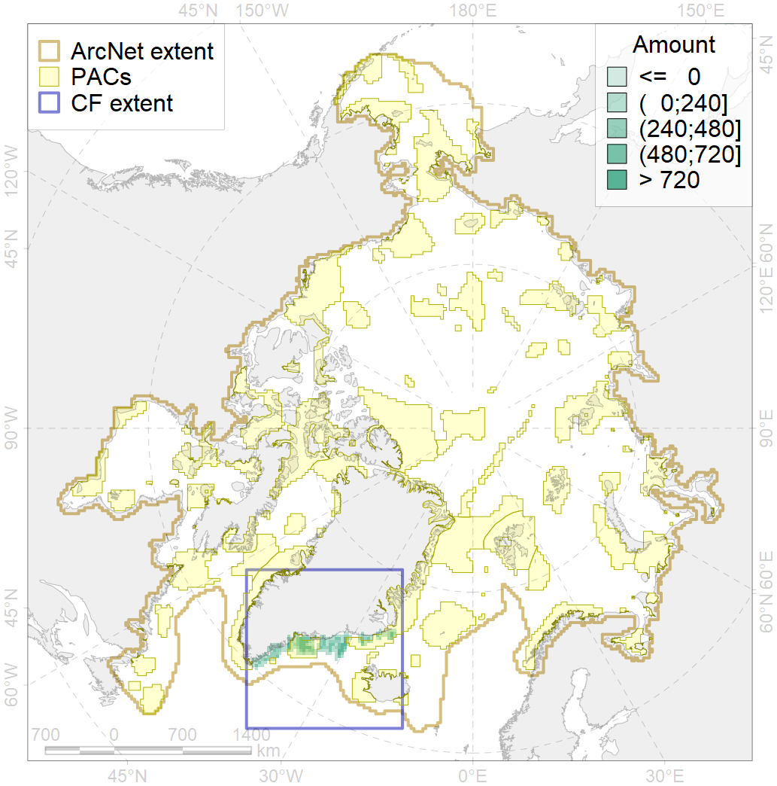
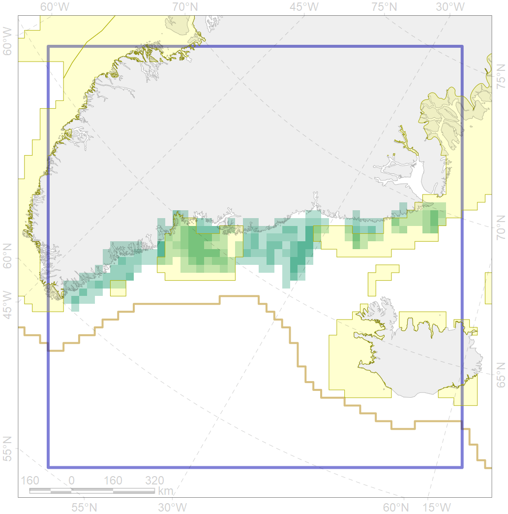

7162

| CF ID | 7162 |
| CF Name | III.6.1.2. SE Greenland glacial troughs |
| Time Period | At least last 100 years |
| Source(s) | Harris et al., 2014; Carmack, Wassmann, 2006 |
| Seasonality | January - December |
| Depth Horizon | |
| Methodology | Data obtained from the literature |
| Author Name | V. Spiridonov, W. Merritt |
| Notes | |
| Conservation Target Set in the Scenario | 0.1166915 |
| Conservation Target Achieved in the Scenario | 0.402 (Scenario: 344.4%) |
| PAC ID | Proportion in the PAC | Contribution to ArcNet Target Achievement | PAC’s Contribution to the Achieved Target |
|---|---|---|---|
| 32 | 13.7% | 98.3% | 28.6% |
| 42 | 28.7% | 211.5% | 61.4% |
| 43 | 0.3% | 1.7% | 0.5% |
| inner | 42.6% | 311.6% | 90.5% |
| outer | 57.4% | 32.9% | 9.5% |